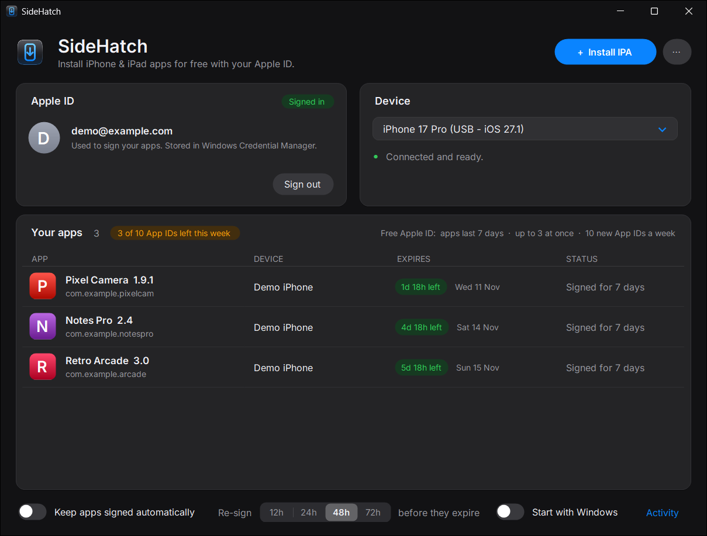
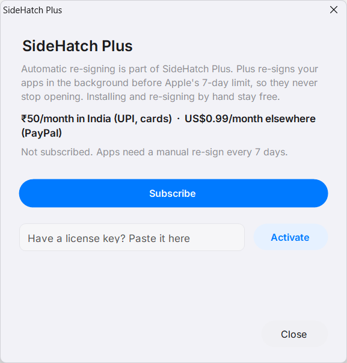

Install IPA files on your iPhone from Windows.
Plug in your device, pick an IPA, and it lands on your home screen. A free Apple ID is enough.
Version 0.2.4 · Windows 10 and 11 · Free

Plug in your device, pick an IPA, and it lands on your home screen. A free Apple ID is enough.
Version 0.2.4 · Windows 10 and 11 · Free
Devices are detected automatically. Drag an IPA onto the window.
Follows your Windows theme.

Optional SideHatch Plus renews your apps in the background.

SideHatch-Setup-0.2.4.exe and run it. It installs for your user only.Free Apple IDs allow 3 sideloaded apps per device, and they expire after 7 days unless re-signed.
No. Those downloads are encrypted, so SideHatch refuses them.